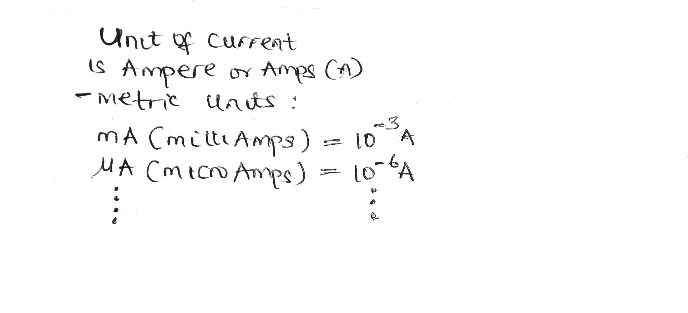
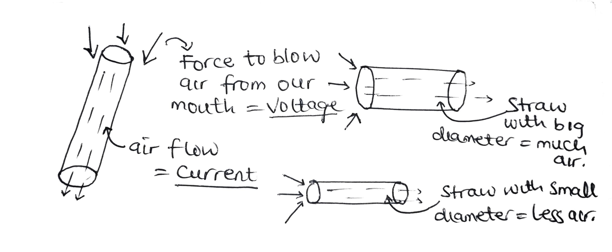

what is ohm's law and why do we need it
The ohm
The use case of circuits are endless which leads to new technology coming up everyday. But before we can design or know how microchips are built, we first need to understand how to analyze simple circuits using different techniques that are developed by other engineers to help ease our life.
What is circuit in general?
A circuit or electric circuit is a close loop that allows the flow of electricity. if the loop is not closed but composed of electrical or electronics components, we call it an electrical network.

Now let’s dive in and talk about the concept of voltage, current and resistance which if the understanding is not clear might make us not to understand how to analyze a circuit.
What is current?
To start with current is, Current constitutes or is the flow of electrons in a circuit. You can think of 'ocean current' which involve stream of water flow instead.
Every wire or conductor has or is composed of atoms which consist of many protons, electrons and neutrons. These electrons are stationary since there are an equal number of positive ion (protons) and that of negative ion (electrons), which means it's in a balance state. But to make it useful, we apply a battery which provides force called voltage to push the electrons inside the wire and as soon as electron flows or moves, we get current.

Since electron is the negative ion which means if we connect a battery to a device like a torch, current flows from the negative side of the battery to the positive side. But by convention of analyzing circuits for ease, instead of moving backward or from negative to positive, it is adopted that current flows from positive to negative, you need to get this right.

The flow of this current is quantified using the unit ampere or amps for short and denoted as A. sometimes this unit are based on metrics, meaning we do have mA (milliAmps), uA (microAmps) and so on. The higher the amps the higher the current and vice versa.
Small nugget
It is current that kills not voltage. But a task is assigned to you, which is to find out how much current is sufficient to kill so we can be cautious.
But if you are curious you can ask us to tell you. Always remember safety first is our tag as engineers.
What is voltage?
As we've seen from our discussion, we say that the force to push current through a wire is voltage and that's the simplified definition of what voltage is because, voltage doesn't move through a circuit as current does but it is across a circuit or circuit component.
A voltage is a source of energy and can be our battery or socket outlet from our home. Voltage has unit just as current which is volt with a symbol V and also can have metric unit as mV,uV etc.

With the explanation that we've made so far, the resistance is what is left now.
What is resistance?
Resistance is the opposition of current flow in a circuit.
Now lets use a bigger picture to relate all this concepts. Thanks to jason on this.
Think of the straw we use in sipping in our drink, if you put it to your mouth and blow air through it, air travels through the straw and comes out on the other end. The flow of this air is the current and the force or pressure from our mouth in order to blow air through the straw is the voltage.
The diameter or size of the straw will determine the amount of air out of the straw which means lower diameter results to less air which requires even more force to push the air through or large diameter which allows much air flow and can even require less force. This concept of large and small diameter is the concept about resistance.
Another nugget
There is no current without a voltage and vice versa. But the limiting body for both is resistance.
To close case, resistance has a unit ohms and symbol is a greek like letter as shown below and also can have metric units as mOhms(milliOhms), uOhm(microOhms), Mohms(megaOhms) etc.

Since we’ve discussed about current, what’s holding us not to talk about direct current (d.c) and alternating current (a.c) – which is the two types of currents we’ve.
What is Direct Current (D.C)
Direct current as the name implies, current flows in one direction for example our 9v battery provides a constant current or direct current and to start off analyzing circuits we use d.c to grasp the concepts of how to use most of the techniques we have before we go in to deal with circuits with alternating current which is the second type of current we have.
What is Alternating Current (A.C)
Alternating current – is a type of current which alternates back and forth and this type of current is found in our home wall socket outlets. To have a better view is that, it flows in one terminal (line or wire) at the first cycle and on the next cycle flows through the other line (or wire). The number of times it flows back and forth depends on the standard defined by each country. For instance, in Nigeria we do have 50hz meaning it moves back and forth 50 times in one second (also called frequency) and in other countries like U.S they have 60hz and their symbol is shown below

This would probably be the end of this section so let’s move to the next and have different discussion.